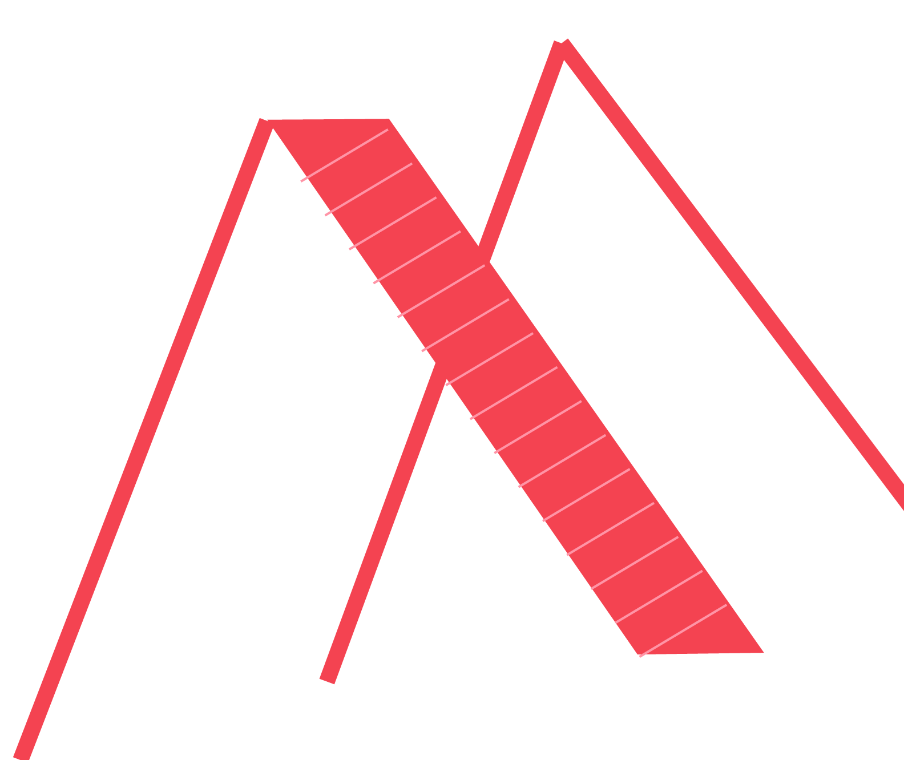

Design: Days Accompanied by Sodagreen
Sodagreen is my favorite band. It is a Taiwaness band established in 2001. There are six memebers: Lead Vocals:Wu Tsing-Fong; Guitar: Liu Jia-Kai; Guitar: Ho Jing-Yang; Piano, Viola: Kung Yu-Chi; Bass guitar: Hsieh Shin-Yi; Drums: Shih Jun-Wei. And the band name means soda water+green.
I encountered Sodagreen in 2010, when I was in high school. Since the their beautiful melodies and poetric lyrics have accompanied me through many memorable moments. Therefore, I made this timeline to memorize these pieces of my life. Every song in it has unique meaning to me.

Timeline of Sodagreen. Made by: Megan